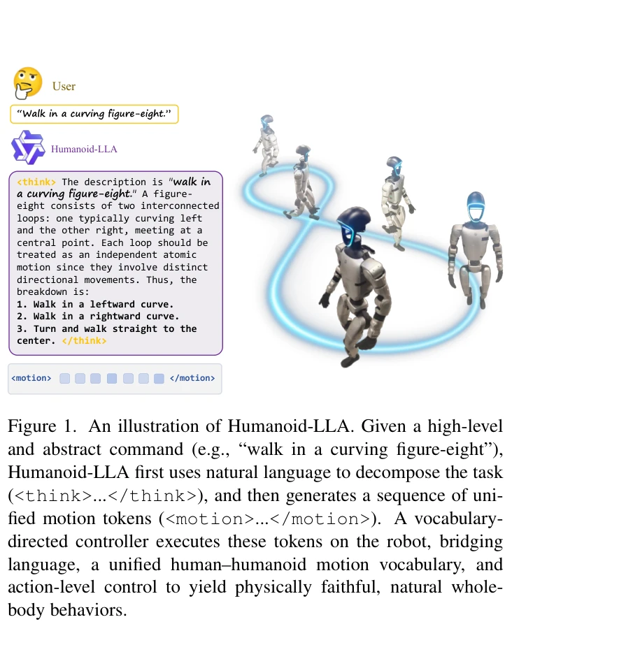
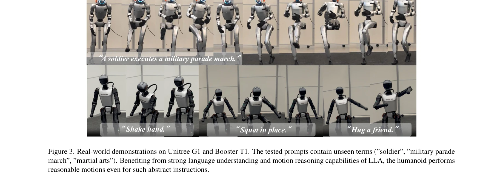
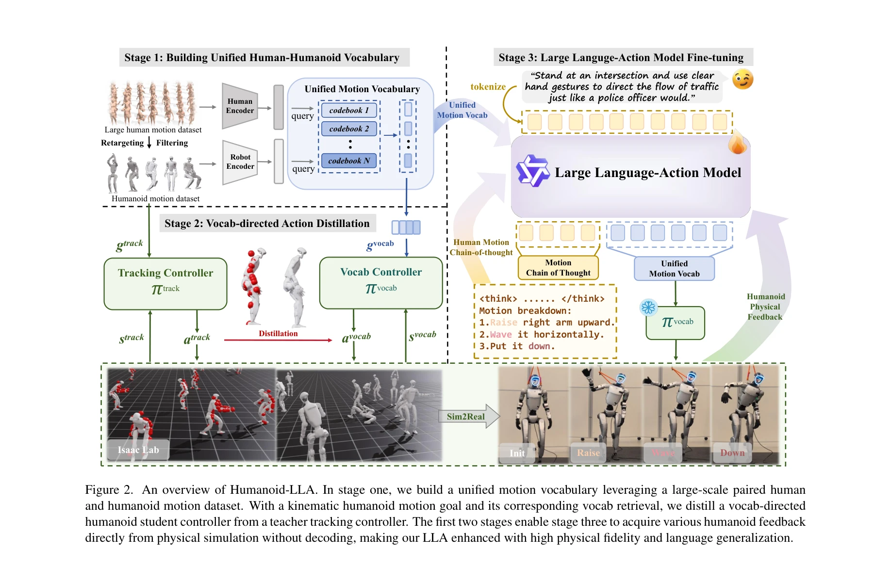

저자: Zhirui Liu, Kaiyang Ji, Ke Yang, Jingyi Yu, Ye Shi, Jingya Wang | 날짜: 2026-04-10 | DOI: 10.48550/arXiv.2511.22963

Figure 1. An illustration of Humanoid-LLA. Given a high-level
자유형식 자연언어 명령을 인간형 로봇의 신체 전체 제어로 매핑하는 Large Language Action Model(Humanoid-LLA)을 제안하며, 통합 모션 어휘, 어휘-지향 컨트롤러 증류, 강화학습 기반 파인튜닝을 통해 언어 일반화와 물리적 타당성을 동시에 달성한다.

Figure 3. Real-world demonstrations on Unitree G1 and Booster T1. The tested prompts contain unseen terms (”soldier”, ”m

Figure 2. An overview of Humanoid-LLA. In stage one, we build a unified motion vocabulary leveraging a large-scale paire
총평: Humanoid-LLA는 통합 모션 어휘, 어휘-지향 증류, 강화학습 파인튜닝을 통합하여 자유형식 언어에서 물리적으로 실행 가능한 인간형 로봇 제어로의 매핑을 최초로 달성한 중요한 기여이며, 실세계 검증과 명확한 기술 혁신으로 인간-로봇 상호작용 분야의 중대한 진전을 나타낸다.